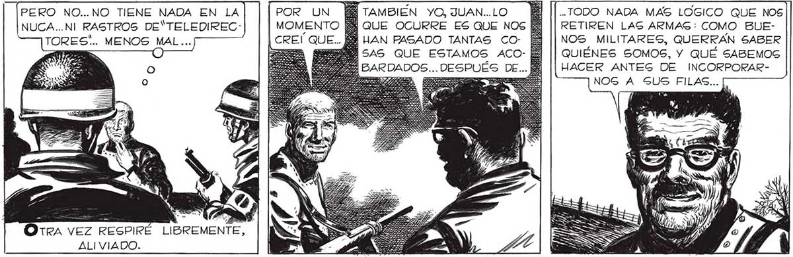
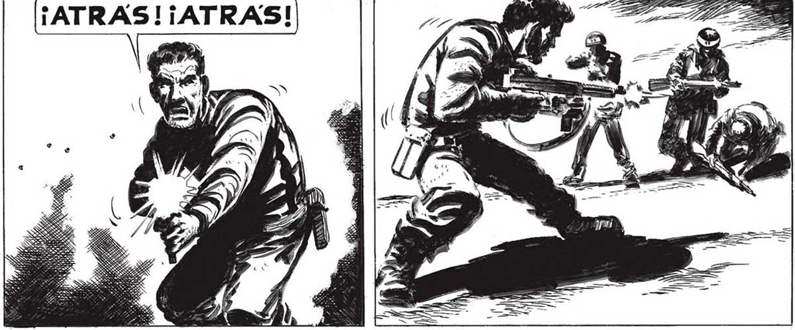
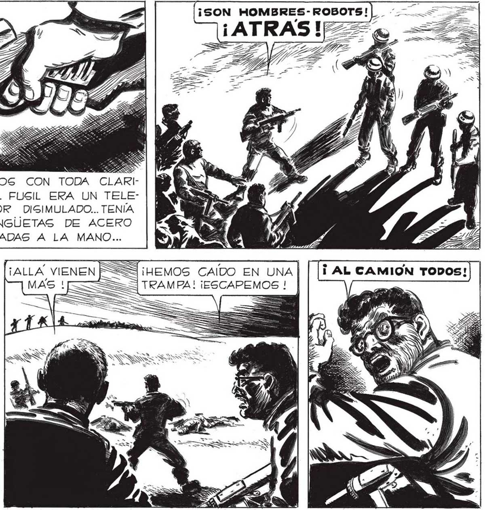

ENTREGUEMOSLE LAS ARMAS. A FIN DE CUEN- 341 TAS, EL HABER ENTRADO EN LA ZONA DE GEGURIDAD SIGNIFICA QUE NOG PONEMOS A GUS ORDENES... AQUI TIENE, AMIGO... PERO NO... NO TIENE NADA EN LA POR UN TAMBIEN YO, JUAN..LO [ ||..TODO NADA MAS LÓGICO QUE NOS NUCA..NI RASTROS DEYTELEDIREC- MOMENTO [Y QUE OCURRE ES QUE NOS RETIREN LAG ARMAS: COMO BUETORES'.. MENOS MAL ... | CREÍ QUE... BM HAN PASADO TANTAS CO- NOS MILITARES, QUERRAN SABER PR O 3 SAS QUE ESTAMOS ACO- QUIÉNES SOMOS, Y QUÉ SABEMOS BARDADOS... DESPUÉS DE... HACER ANTES DE INCORPORAR3 ESO RA NOG A SUS FILAS... / OTRA VEZ RESPIRÉ LIBREMENTE, ALIVIADO. TE HAS VUELTO ¡NO! ¡MIREN ESTO! ¡MIREN LOCO, FRANCO? LA MANO QUE EMPUNA EL ¡SON HOMBRES-ROBOTS!|L 7 Y / A l V | 7 2 ME, A | Lo vimos CON TODA CLARIl, A). ] | PAL : WE : DAD: EL FUSIL ERA UN TELE<A Mn 7 S ] 2. DIRECTOR — DISIMULADO... TENÍA : a | 5 : LAS LENGUETAS DE ACERO - CONECTADAS A LA MANO... =3 ¡HEMOS CAIDO EN UNA | TRAMPA! ¡ESCAPEMOS ! > A * SSI .


